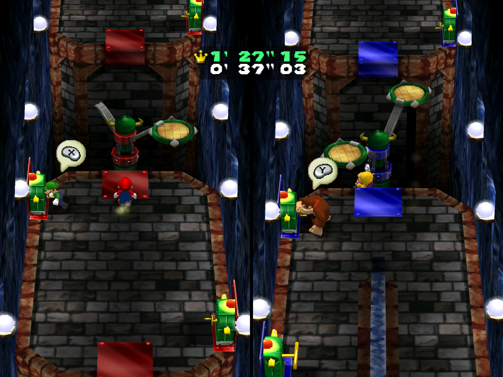

Overview

This encounter is designed to be a portion of a dungeon, but it can certainly be adapted to other settings. It is also important to note that this puzzle relies on the party containing at least three members.
Your party enters a room. As per typical dungeon protocol, the door closes and locks behind you with no discernible way of leaving. Naturally, the door on the opposite side of the room is closed and locked as well. The room is completely empty except for the torches on the wall providing light and three statues in the center of the room, aligned side by side, facing the door through which the party entered.
Upon further inspection, the statues seem to be of the three wise monkeys, displaying the "see no evil, hear no evil, speak no evil" maxim. There are no symbols or markings on the statues at all - they are nothing more than stone (or marble, bronze, etc.) statues. What does your party do?
Solution
In order to get the door to unlock and grant the party the ability to proceed through the dungeon, the three monkeys must be mimicked. One party member must cover his eyes, one his mouth, and one his ears. These all must be done simultaneously in order for the door to unlock/open.
Once the door unlocks, the party will cheer, be proud, etc... until they walk through the door.
Upon walking through the door to proceed, the party members will be afflicted with whatever ailment they mimicked. He who covered his eyes will be blinded. He who covered his ears will be deafened. He who covered his mouth will be mute. When I gave this puzzle to my group, I decided that their fourth member (who didn't have to mimic anything for the door to unlock) would be afflicted with all three, essentially making him a vegetable.
Now, if you want the next part to be as intense, realistic, and downright as silly as possible, force your friends to act the part. Blindfold the blind one and make sure he doesn't hear any descriptions of the next room. Make the deafened one cover his ears or listen to music loud enough so that he can't hear the rest of his party. Although this obviously isn't a requirement for the puzzle to be effective, it makes it a more fun experience (though the vegetable may disagree).
Now, the next room can be entirely up to you, but a lot of typical dungeon rooms can be ridiculously difficult with a handicapped party. What I like to use is an obstacle course which requires teamwork, since the handicaps can really shine while still being somewhat manageable. The obstacle course I designed was very closely based on the Dungeon Duos minigame from Mario Party 4.
This obstacle course contains a series of impediments which require people to work together in order to advance. For example, as depicted in the image above, a platform that rotates, bringing whomever stands on it to the other end of a cliff. However, the platform is controlled by a crank which can't be reached if you're on the platform, meaning you need a party mate to rotate it for you. Other simple obstacles such as a rope swing or see-saw type platform can be added, but the important part is that teamwork should be crucial and the handicaps should play a role.